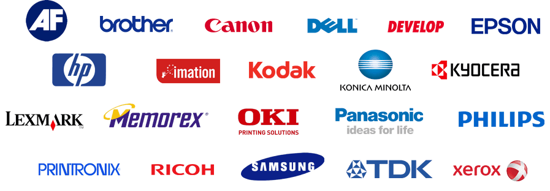

BIU-MAX
Oferujemy oryginalne materiały eksploatacyjne oraz sprawdzone, wysokiej jakości zamienniki
marki print-max: Tonery laserowe, wkłady atramentowe oraz taśmy do drukarek igłowych.
Produkty
W naszej ofercie znajdziesz oryginalne oraz zastępcze materiały eksploatacyjne do urządzeń biurowych wszystkich producentów dostępnych na rynku. Prowadzimy również serwis drukarek, kopiarek oraz faksów.
Dostawa: Dla firm i instytucji na terenie Poznania i okolic dostarczamy towar gratis. W przypadku odbioru osobistego prosimy o wcześniejsze potwierdzenie dostępności towarów.
Nasza historia
BIU-MAX istnieje na rynku od 2005 roku i jest właścicielem oraz dystrybutorem marki print-max.
print-max to wysokiej jakości materiały eksploatacyjne do urządzeń drukujących, kopiujących oraz faksów. W naszej ofercie znajdziesz oryginalne oraz zastępcze materiały eksploatacyjne
do urządzeń biurowych wszystkich producentów dostępnych na rynku.
Prowadzimy również serwis drukarek, kopiarek oraz faksów. Zależy nam na sprawnej obsłudze klienta, dlatego zaspokoimy Twoje potrzeby na podstawowe produkty „od ręki”. Zamówienia nietypowe realizujemy do 3 dni roboczych. Jesteśmy do Twojej dyspozycji i chętnie odpowiemy na Twoje pytania!
Kontakt
BIUROWE MATERIAŁY EKSPLOATACYJNE
61-692 Poznań
tel.: 61 826 89 00
kom.: 500 648 769
GG: 45817570
Godziny otwarcia: pn-pt: 08:00-16:00